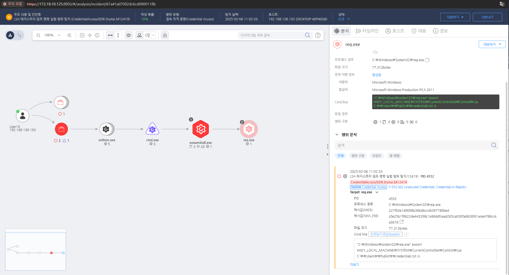

T1552.002 Collect Credentials Stored in Windows Registry
D3FEND
MITRE ATT&CK 액션을 기준으로 대응 방안을 작성
Detection
탐지 방법 작성, EFR과 무관하게 해당 Action에 대한 탐지 방법 명시
Detection(EDR)

Response
공격자가 수정한 레지스트리 키를 원복합니다.
Mitigations
1. 자격 증명 보안 저장 및 암호화
- 자격 증명은 암호화된 저장소(예: Windows Credential Store, Keychain 등)에 저장하여 평문으로 저장되지 않도록 합니다.
- 민감한 정보를 파일에 저장하는 대신 환경 변수나 비밀번호 관리 툴을 사용하여 안전하게 관리합니다.
2. 파일 시스템 접근 제어 강화
- 중요한 파일에 대한 접근은 최소 권한 원칙(Least Privilege) 을 적용하여 특정 사용자 및 그룹만 접근할 수 있도록 제한합니다.
- 자격 증명 파일을 저장하는 디렉터리에 대해 권한을 제한하고, 디렉터리 자체도 암호화하여 무단 접근을 방지합니다.
3. 자격 증명 관리 정책 수립
- 자격 증명을 정기적으로 변경하고, 오래된 자격 증명은 즉시 폐기합니다.
- 멀티팩터 인증(MFA) 을 적용하여 자격 증명만으로 시스템에 접근할 수 없도록 합니다.
- 자격 증명이 필요하지 않은 시스템에서는 자격 증명을 사용하지 않도록 하거나, 필요한 경우 서비스 계정에만 자격 증명을 부여합니다.
4. 자격 증명 추출 탐지 및 모니터링
- 파일 무결성 모니터링(FIM) 을 사용하여 중요한 파일에서 자격 증명이 추출되는 징후를 탐지합니다.
- SIEM(Security Information and Event Management) 시스템을 활용하여 자격 증명 관련 이상 활동을 실시간으로 모니터링하고 경고를 생성합니다.
5. 사용자 교육 및 보안 인식 강화
- 사용자가 자격 증명을 파일에 저장하지 않도록 보안 교육을 진행합니다.
- 안전한 비밀번호 관리 방법과 자격 증명 유출 방지에 대한 교육을 강화하여 사용자 실수를 예방합니다.
Affected Techniques
Action 실행시 함께 영향을 받는 다른 Techniqes
|D3FEND|
|:-----------:|